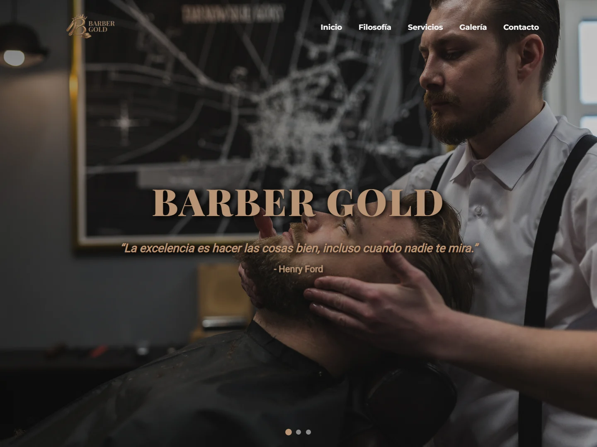

01 / 03Disponible para oportunidades
Manuel Rodríguez.
Desarrollador de aplicaciones web
Siempre aprendiendo nuevas tecnologías para aplicar la solución adecuada a cada reto.
Frontend · Backend · Bases de datos · Testing
PROYECTOS DESTACADOS
Proyectos.
Proyectos de desarrollo web, programación y bases de datos, acompañados de ejemplos de testing.
La Despensa
Catálogo y pedidos para una tienda de barrio.
Una aplicación con productos filtrables, cesta y registro de pedidos de demostración. El servidor expone una API HTTP y guarda los datos en SQLite.
El pago se simula; no se solicitan datos bancarios ni se procesa ningún cobro.
Ver código fuenteFLUJO DE PEDIDOLOCAL
01Catálogofiltros y existencias→
02API HTTPvalidación del pedido→
03SQLitetransacción y stock✓
GET /api/productsPOST /api/orders
Programación en Java
Ejercicios de programación orientada a objetos, interfaces gráficas y acceso a datos.
Ver proyectos JavaCalculadora de consolaMétodos, condiciones y validación
Modelo de empresaClases, herencia y polimorfismo
Calculadora de escritorioJava Swing e interacción gráfica
Gestión de tiendaJDBC, operaciones CRUD y consultas preparadas
COMPROBAR, DETECTAR, MEJORAR
Testing y calidad.
Casos concretos para comprobar cálculos, validar respuestas y revisar qué ocurre cuando una operación falla.
2 pruebas superadas
Cálculo de remuneraciones
Dos pruebas de mi práctica de Entornos de Desarrollo. Preparo los objetos, cambio sus datos y comparo la remuneración calculada con el resultado esperado.
Práctica realizada sobre un modelo facilitado en clase. Se conservan los dos casos originales.
Ver casos y resultados
- Remuneración de un autónomo
Base de 1800 + 35 por hora × 60 horas. Resultado esperado: 3900. La aserción se supera con la tolerancia original de 0,1.
- Remuneración por cuenta ajena
Base de 2000 / 3 multiplicada por 1,18. Resultado esperado: 786,67. La aserción se supera con una tolerancia de 0,1.
9 pruebas superadas
Pedidos y datos
Pruebas de La Despensa que comprueban la API y SQLite: crear un pedido, descontar existencias y deshacer los cambios si falta stock.
Ver casos y resultados
- Pedido válido
La API responde con 201, guarda las líneas del pedido y descuenta las unidades solicitadas.
- Existencias insuficientes
La API responde con 409. No queda un pedido parcial y las existencias conservan sus valores anteriores.
- Parámetro fuera de rango
Una petición de catálogo con page=0 devuelve 400 y el código invalid_query.
Ejecución local: 9 de octubre de 2026. Estos resultados corresponden a los casos ejecutados; no indican cobertura completa.
Qué explico en cada prueba
Los datos de partida, los pasos, el resultado esperado y lo que se ha comprobado. El código y las instrucciones de ejecución están disponibles en cada proyecto.
SOBRE MÍ
Curiosidad para aprender. Criterio para construir.
Me interesa el desarrollo de principio a fin: diseñar una interfaz clara, escribir la lógica que la hace funcionar y organizar los datos. Busco incorporarme a un equipo donde aportar, aprender de otras personas y seguir mejorando.
También quiero profundizar en inteligencia artificial y ciberseguridad, y explorar cómo aplicarlas al desarrollo web.
01Interfaces webEstructura, estilos e interacción
02ProgramaciónJava, lógica y orientación a objetos
03Bases de datosSQL, consultas y persistencia
04TestingJUnit, aserciones y pruebas de API
TECNOLOGÍAS Y HERRAMIENTAS
Tecnologías.
Tecnologías y herramientas que he trabajado en DAW y en otras formaciones. Mis proyectos muestran cómo he aplicado parte de ellas.

- SQL

- COB
- { }
- </>

- DB
- B
- G
JavaScript: DOM, eventos y formularios. Diseño web adaptable (responsive). SQL: DDL, DML, DCL, procedimientos almacenados, vistas y disparadores (triggers). COBOL: curso introductorio.